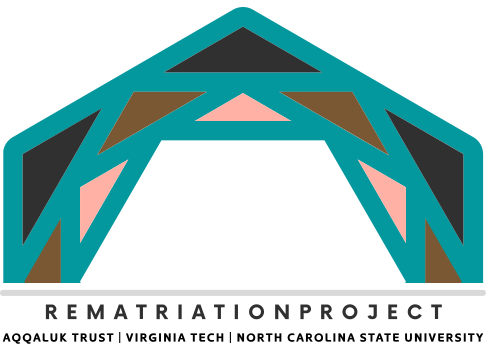

Project Partners
Dr. Cana Uluak Itchuaqiyaq She/They
Iñupiaq, Noorvik Native Community

Associate Professor of Technical & Scientific Communication at Virginia Tech
Cana Uluak Itchuaqiyaq is an Iñupiaq scholar, an Aqqaluk Trust PhD alum, and a member of the Noorvik Native Community. Her goal as a scholar is to use the skills she developed through her academic and cultural education to directly benefit the Iñupiat of Alaska. Cana uses her skills as a technical communicator, grant writer, and education strategist to help coordinate the Rematriation Project. As the daughter of Caleb Lumen Pungowiyi, Cana also coordinates with her family and research team to assure Caleb's legacy is documented respectfully and accurately.
Lucy Aviññaq Boyd She/Her
Iñupiaq, Buckland Native Community
Iñuunialiqput Director at Aqqaluk Trust
Lucy Aviññaq Boyd is from Buckland where she grew up "on the knee" and listening to the stories of NANA from her grandfather, Lester Hadley Sr., who helped raise her. She earned her degree in Accounting & Alaska Native Studies, and her mission is to help Native Alaskan communities grow, develop, and sustain our cultures and Native language—to not just survive but thrive. She serves as the team's main liaison between the team and Aqqaluk Trust.
Kara Long She/Her
Assistant Director of Library Metadata Services at Virginia Tech
Kara actively supports the creation, documentation, and maintenance of digital collection metadata. Her research interests include adapting interview techniques to better understand domain-specific metadata needs; crosswalks between born-digital and traditional descriptive cataloging; and sustainable digital collections. She will use her expertise to support the quality, discoverability, and accessibility of the collection data, and document and contextualize the descriptive work.
Andi Ogier She/Her
Assistant Dean and Director of Data Services at Virginia Tech
Andi (she/her) is a librarian who has worked in libraries for over twenty years, and has worked at Virginia Tech since 2008. She currently serves as Assistant Dean for Data Services and Faculty Affairs in the University Libraries at Virginia Tech. She brings her knowledge of data services, university funding, and more to support the team's work to develop a community model of digital archiving. She enjoys knitting, helping people find things, and hanging out in the Arctic. She has eaten maktak in Alaska and Greenland, and really wants to learn how to cure and smoke salmon.
Chris Lindgren He/Him
Associate Professor of Technical Communication at North Carolina State University
Chris is originally from a family farm just north of Fargo, North Dakota—ancestral lands of the Ashinabek Nation and Dakota-Lakota-Nakota Nation. He's excited to share his joy for learning about data with the communities in the NANA region, and learn more about how data can support their self-determination. He brings his specialities in communicating with data, computer coding, and digital technologies to help design the online interface and help coordinate other technological aspects of this project.